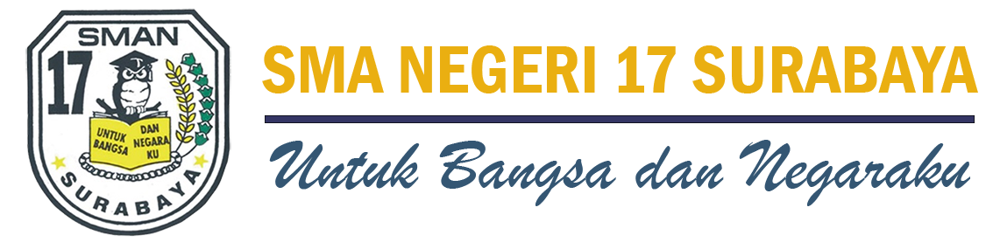
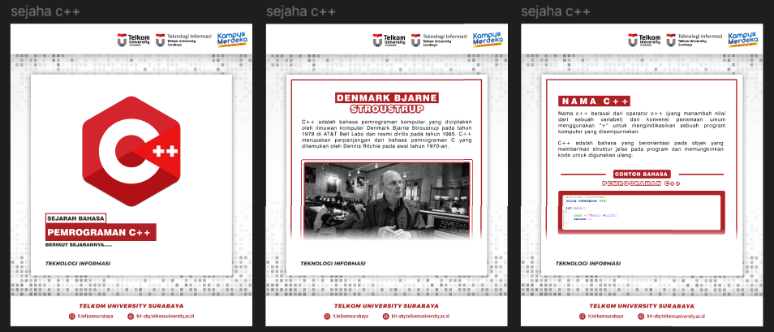
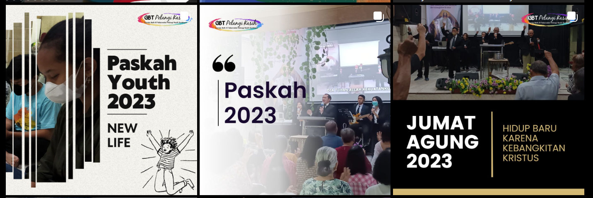

Tentang Saya
Seorang Mahasiswa semester 4 program studi Teknologi Informasi Universitas Telkom
Surabaya dengan beberapa pengalaman organisasi mahasiswa dan sertifikasi EprT dari
Universitas Telkom. Memiliki skill di bidang editing, public speaking, dan content planning
yang dibuktikan dengan meraih juara pada bidang videografi dan beasiswa inspirator
juara.
Pendidikan
SMAN 17 Surabaya

Bergabung dalam organisasi majalah
sekolah, menjadi salah satu siswa
yang mendapatkan kesempatan
untuk menjadi siswa eligible, dan
mendapatkan penghargaan best
performance lomba band Toyota
Avanza Veloz Sebangsa 2019
Telkom Univrsity Surabaya

Menjadi salah satu mahasiswa yang
mendapatkan beasiswa internal
kampus, aktif dalam berbagai
kegiatan organisasi internal maupun
eksternal, dan berperan Aktif dalam
mempromosikan IT Telkom Surabaya
Portofolio
Berikut adalah beberapa pengalaman dan karya terbaru saya dalam desain grafis dan pembuatan konten.
Konten Kreator Prodi Teknologi Informasi Telkom University

Merencanakan pembuatan konten, mendesain feed untuk instagram,
memastikan setiap konten media sosial
kampus yang diterbitkan memenuhi
standar kualitas dan aturan penulisan
yang ditentukan serta melakukan revisi dan editing untuk
memastikan kesalahan tata bahasa dan
informasi.
Tim Multimedia GBT Pelangi Kasih

Menjadi tim multimedia gereja GBT Pelangi Kasih
yang bertanggung jawab dalam hal dokumentasi dan
publikasi event gereja di media sosial. Publikasi meliputi
pembuatan desain feed, poster, dan story instagram
gereja.